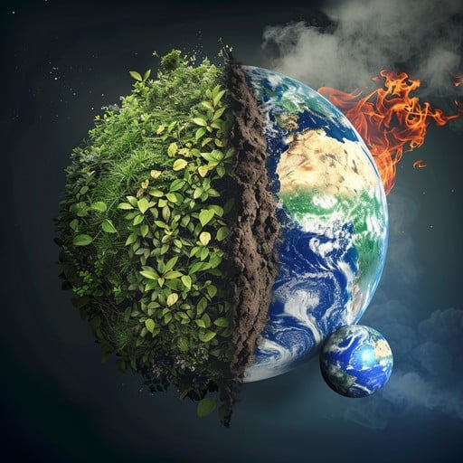
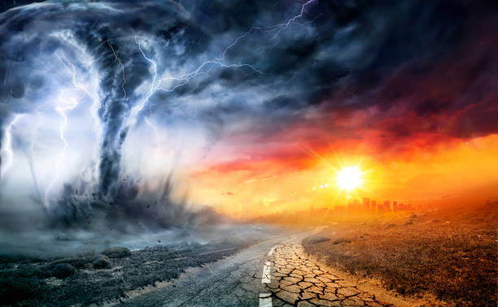
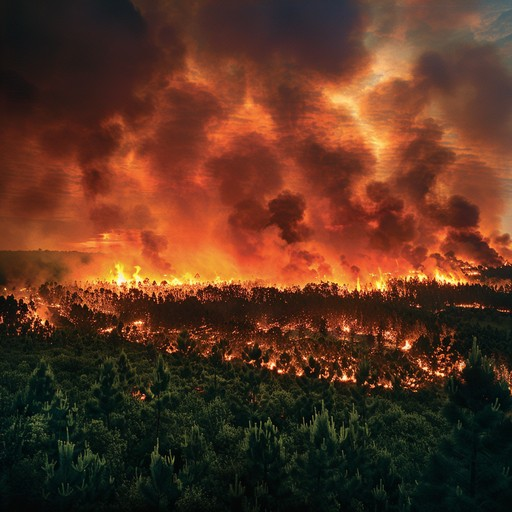

Overview
Climate change refers to long-term shifts and alterations in average weather patterns and global temperatures. In the modern era, the dominant driver is human activity—[...]

Main causes
Greenhouse gas emissions
Carbon dioxide (CO₂), methane (CH₄), nitrous oxide (N₂O), and some industrial gases trap heat in the atmosphere. CO₂ from burning coal, oil, and gas is the largest human-caused co[...]
Deforestation and land use
Clearing forests reduces the planet’s capacity to absorb CO₂ and often releases stored carbon when trees are burned or decay.
Agricultural and industrial sources
Livestock produce methane; some fertilizers release nitrous oxide; and production of cement and certain chemicals emits CO₂ and other potent gases.
Effects and impacts
Rising temperatures
Global average surface temperatures have risen roughly 1–1.2°C (about 2°F) since the late 19th century, with larger increases in some regions and seasons.
Melting ice and sea-level rise
Glacial and ice-sheet loss, combined with thermal expansion of warming oceans, is driving sea-level rise and increased coastal flooding risk.

More extreme weather
Warming changes precipitation patterns, increases heavy rainfall events, and can intensify storms and droughts in some regions.

Biodiversity and ecosystems
Rapid change can outpace species’ ability to adapt, contributing to habitat loss, range shifts, and extinctions—particularly for sensitive ecosystems like coral reefs and alpine habit[...]
Human systems
Climate change creates risks for food security, human health, infrastructure, and economic stability, often hitting vulnerable communities hardest.
What can be done

- Reduce emissions: energy efficiency, shift to low-carbon electricity, cleaner transport.
- Protect and restore natural carbon sinks: reforestation, better land management.
- Adaptation measures: resilient infrastructure, disaster planning, climate-smart agriculture.
- Support policy and community action: sustainable policies, local initiatives, education.
For authoritative data and climate science, consult IPCC reports, national meteorological agencies, and recognized research centers.